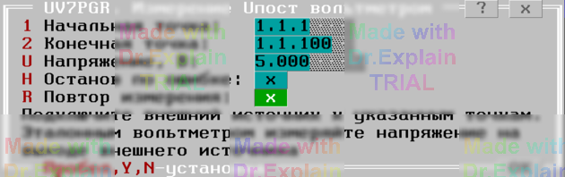
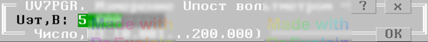

4.6 UV7PGR. Измерение U постоянного (КН Т)
Утилита определяет погрешность измерения постоянного напряжения командой КН с ключом «Т» (вольтметром).
Предоставляется первое меню (см. рисунок 1).

Опции меню 1:
- Напряжение, В — задаёт величину программно выставляемого напряжения на ПИНТ или внешнем источнике;
- Начальная точка — вход АСК, к которому подключаются выход «+» источника и вход вольтметра;
- Конечная точка — вход АСК для выхода «–» источника и общего вольтметра;
- Внешний источник — переключает источник измеряемого U на внешний.
После ввода параметров автоматически выполняются следующие действия:
- Подключение начальной и конечной точек к шинам A1 и B1;
- Настройка вольтметра на измерение по шинам A1,B1;
- Показ второго меню (см. рисунок 2).

Введите значение напряжения, измеренное эталонным вольтметром, и нажмите <Enter>.
В протокол выводятся сообщения вида:
$TST1 Uд.б=5 В±1.00% Uизм=5.0000 В Погр=+0.00%
$TST1 Измерений:1 Все норма ПОГРmin=0 ПОГРmax=+0.00%
По окончании теста отображается итоговое меню (см. п. 6.3).